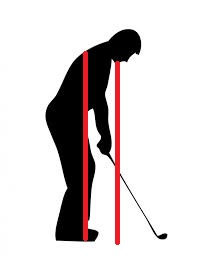

Iron Play
Irons in bag and their carry distances
| Iron |
3 hybrid |
4 hybrid |
5 iron |
6 iron |
7 iron |
8 iron |
9 iron |
pw |
52 |
56 |
60 |
Putter |
| Yardage (carry) |
220 |
210 |
190 |
180 |
170 |
160 |
150 |
140 |
110 |
90 |
70 |
| Irons are for precision |
These are my latest important thoughts
- Proper setup of arm pit, knee caps, and middle foot all on same verticle line
- Your right hand on the club should be directly down from your chin
- On the backswing, when the club reaches parrallel to the ground the face should be pointing directly up
- Balance!
- Slow tempo back
- For accuracy, only swing back till the left arm is parrallel to the ground
- For distance, increase turn


Home Driving Irons Short Game
Putting Journal